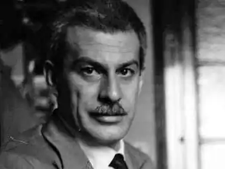
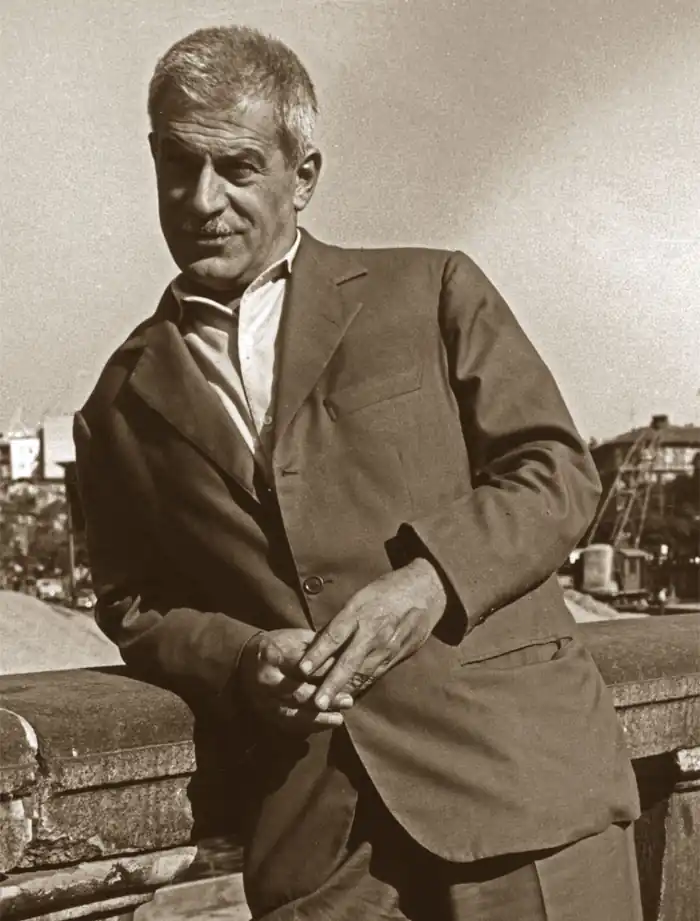

Італійський письменник і літературний критик. З дитинства відрізнявся неспокійним характером, рано покинув навчання і періодично виїжджав з Сицилії, заробляючи собі на життя найрізноманітнішими професіями. Вивчивши англійську мову, довгий час займався перекладами англомовних авторів.
У 1933 — 34 рр. Вітторіні опублікував свій перший роман "Червона гвоздика" ( "Il garofano rosso") і почав працювати над другим, "Еріка та її брати" ( "Erica ei suoi fratelli"), який буде опублікований тільки в 1954 р незавершеним: робота над ним була перервана через війну в Іспанії, під час якої письменник брав участь в комуністичному підпіллі. В кінці 1938 р почав працювати літературним консультантом у видавництві "Бомпіані" в Мілані. Після війни і участі в русі Опору вступає в компартію Італії і стає головним редактором газети "Уніта" ( "Unità"); проте незабаром виходить з партії через неприйняття сталінізму. Не отримавши ніякої освіти, будучи самоуком, Вітторіні як письменник придбав великий досвід завдяки співпраці з флорентійським журналом "Солар", на сторінках якого починав публікацію своїх оповідань, об'єднаних пізніше до збірки "Обивателі" ( "Piccola borghesia", 1931).
У культурній атмосфері журналу народжується і його роман "Червона гвоздика" (друкувався частинами в "Солар" з 1933 р по 1934 р, але повністю опублікований тільки в 1948 р, так як публікації перешкоджала фашистська цензура). Книга відобразила властиве в цілому літературній практиці журналу коливання між реалізмом і ліричної прозою, між ідеологічною заангажованістю і прагненням до абстрагування, яке було близько естетиці письменника. Інтерес Вітторіні до ідеологічних і соціальних проблем проявляється ще більш очевидно і глибоко в романі "Еріка та її брати". У ньому розповідається про долю дівчинки, залученої в трагічні події, що послідували за економічною кризою, які настали після 1929 р беззахисною перед грубістю і підступністю світу, але здатної зберегти в глибині душі оптимістичне сприйняття світу. Роман "Сицилійські бесіди" ( "Conversazione in Sicilia"), який, на думку багатьох критиків, вважається літературним шедевром Вітторіні, був написаний в 1938 р, але виданий тільки в 1941 р Цей твір, після "Калабрії" Коррадо Альваро "марсик "Іньяціо Сілонов," Молізе "Франческо Йовіне, вводить в так зв. "Опозиційну" прозу ще один регіон Півдня Італії — Сицилію. Книгу незабаром після видання фашистська критика назвала "антидержавної" і "аморальною", оскільки побачила в ній неприкрите викриття існуючого режиму. Роман написаний від першої особи, складається з п'яти незалежних частин і оповідає про поїздку юнаки Сільвестро з Мілана на рідну Сицилію, щоб знайти вихід з екзистенціального і ідеологічної кризи, в якому він опинився, і знову знайти сенс життя. Роман написаний під враженням ситуації, що склалася в Іспанії під час громадянської війни, і відображає суворі історичні та соціальні умови Сицилії, в якому держава з багатовіковою історією, доведене до занепаду, страждає від принижень фашистського режиму. Острів і його мешканці стають позачасовим, універсальним символом людського існування, страждань і болю. Роман, в якому реалістичне і символічне переплетені дуже тісно завдяки домінуючим в ньому експресивним засобам вираження, являє собою добре організовану художню систему і виділяється стилістичним майстерністю. У романі "Люди і нелюди" ( "Uomini e no"), написаному в період Опору і вийшов в 1945 р, у Вітторіні намічається нове, зацікавлене ставлення до ходу історії, яке спонукає його активно втручатися в неї. Після ряду менш вдалих творів (романів "Семпьоне підморгує Фрежюс" ("Il Sempione strizza l'occhio al Frejus", 1947) і "Жінки з Мессіни" ("Le donne di Messina", 1949), а також оповідання "Гарібальдійка" ( "La garibaldina")) Вітторіні повертається до класичної прозі в романі "Міста світу" ("Le città del mondo"), розпочато в 1952 р, опубл. ПОСМ. в 1969 р) Сицилійська середовище є загальним тлом, який пов'язує п'ять різних історій, в яких автор знову повертається до свого улюбленого мотивацію подорожі людини в пошуку моральних цінностей і духовної свободи. Назва роману є алюзією на утопічну віру в життєвий простір, що відповідає потребам людини. Структура роману, навмисно далека від концепції "класичного" твори із зав'язкою, розвитком сюжету і розв'язкою, підтверджує його експериментальний характер, властивий всій прозі Вітторіні. Одним з інструментів, за допомогою яких письменник намагається творити і поширювати в Італії нову культуру, здатну виховувати людини в дусі свободи, направляти колективну енергію шляхом суспільного прогресу, стає журнал "Політекнік" ( "Il Politecnico"), заснований письменником в 1945 р У ньому Вітторіні захищає значимість літератури і підкреслює її головну функцію — пошук істини. Великий інтерес представляють публікації журналу, в яких він різко засуджує сталінізм. Вони стали причиною гострої полеміки письменника з Пальміро Тольятті і його виходу з компартії Італії. Вітторіні був також есеїстом і критиком, сприяв численним видавничим починанням, завдяки яким в 50-60-і рр. в італійській культурі відбуваються суттєві зміни. Важливим кроком у цьому сенсі став журнал "Менабо" ( "Il Menabò"), створений у співпраці з І. Кальвіно в 1959 р, який — разом з видавничою серією "Джеттоні" ( "Gettoni"), придумана Вітторіні для видавництва "Ейнауді ", став одним з найважливіших засобів для того, що познайомити читача з італійським і європейським літературним авангардом. Е. Вітторіні і Ч. Павезе належить і заслуга у виданні "Американської антології", яка вивела на культурну сцену багатьох значних американських письменників, до цього часу мало відомих в Італії.